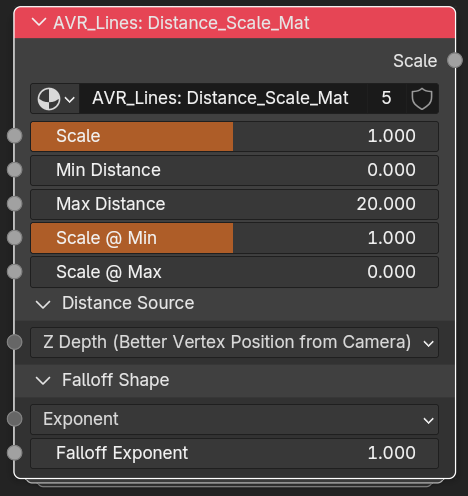

Distance_Scale
AVR_Lines: Distance_Scale scales a width value by distance. It ships in two flavours with a near-identical interface, differing only in their Distance Sources: Z Depth is material only, and the camera-relative sources are geometry nodes only:
- Distance_Scale_Mat: shader group, inserted into materials and wired into Shader_Data's width-scale sockets.
- Distance_Scale_GN: geometry-nodes group, inserted into the Geo_Data container and wired into Geo_Data's width-scale sockets. If the Geo_Data node is being used as a modifier directly, there is no way efficient to plug this group into its inputs. Nesting Geo_Data into a new graph is the stronger workflow.
Add either with the Add Distance Scale Group tool. For the concept, see Distance Scaling.

Reshaping the output
The Scale output doesn't have to go straight into a Width Scale. Running it through a Power node or a Float Curve on the way lets each line type fall off on its own curve from a single group. See Examples.
Top-level
- Scale (output): Adjusted Scale. Plug into one of the Width Scales on the Shader_Data or Geo_Data node.
- Scale (input): Base scale multiplier applied to the distance falloff.
- Min Distance: Distance where the scale gradient starts.
- Max Distance: Distance where the scale gradient ends.
- Scale @ Min: Width scale when at (or nearer than) Min Distance.
- Scale @ Max: Width scale when at (or farther than) Max Distance.
Distance Source
Distance Source (menu) picks how distance is measured. Each mode that needs a reference point has its own Point Location input, so only the input belonging to the selected mode is used.
The two flavours offer different modes. The material version has no camera-relative modes, because writing a camera position into a shader tree every frame discards the compiled material and makes surfaces flash while the camera moves. The geometry-nodes version resolves the camera internally, with no such cost. In exchange, only the material version has Z Depth, which measures depth along the view axis rather than radial distance and is the better behaved of the two. See Z Depth vs. distance to the camera.
Distance_Scale_Mat (shader, 3 Point Locations)
- Z Depth (Better Vertex Position from Camera): Camera-space depth of the vertex, measured along the view axis rather than radially, so it doesn't fall off toward the corners of frame. No Point Location needed. The default, and the right choice for almost every setup.
- Vertex Position from Point: Distance between the vertex position and a Point Location.
- Two Points: Distance between two Point Locations.
Distance_Scale_GN (geometry nodes, 4 Point Locations)
- Vertex Position from Active Camera: Radial distance from the vertex to the Active Camera, rather than depth along the view axis. Points near the edges of frame measure as further away than points in the centre at the same depth.
- Vertex Position from Point: Distance between the vertex position and a Point Location.
- Point from Active Camera: Distance between a Point Location and the Active Camera.
- Two Points: Distance between two Point Locations.
Camera modes are geometry-nodes only, Z Depth is material only
Geometry nodes read the Active Camera's position natively (Object Info + Active Camera). A shader can only get it from Python writes or a driver, and both discard the compiled material whenever the camera moves, so surfaces flash grey while moving.
*Z Depth* goes the other way: it reads Camera Data directly in the shader and needs no camera position, so it is the material flavour that has it. It is also the better measurement. See [Z Depth vs. distance to the camera](distance-scaling.md#z-depth-vs-distance-to-the-camera).
Geometry nodes could compute the same value (invert the camera transform, transform the position into camera space, negate Z), but that isn't wired into `Distance_Scale_GN` yet.
Falloff Shape
- Falloff Control (menu): Curve used to blend between Scale @ Min and Scale @ Max across the distance range (Exponent, Closure, Smoothstep, Smootherstep, or Stepped).
- Falloff Exponent: Exponent for the Exponent falloff mode (1 = linear, higher curves toward Max, lower curves toward Min).
- Falloff Closure: Custom falloff function for the Closure mode. A Float Curve or Color Ramp works well.
- Steps: Number of steps for the Stepped falloff mode.
Related: Distance Scaling · Add Distance Scale Group